Cabinet Studio how-to
For Warren Williams. Guide folder: C:\Users\spart\OneDrive\Desktop\CabinetStudio\docs\how-to\
Design aid: drawings are not certified UL 508A. Programming is not a live PLC download. Edit devices/wires in the cabinet UI, then re-run Drawings — do not hand-edit the SVG.
A. Start
- Double-click Desktop shortcut Cabinet Studio.
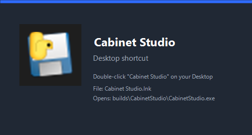
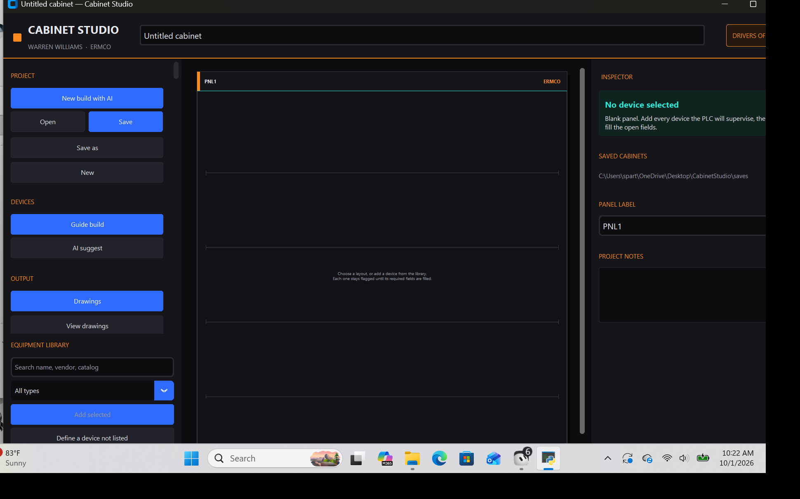
B. Open sample
- Click Open (or Ctrl+O).
- Open
CabinetStudio\saves\sample-motor-cabinet.cabinet.json.

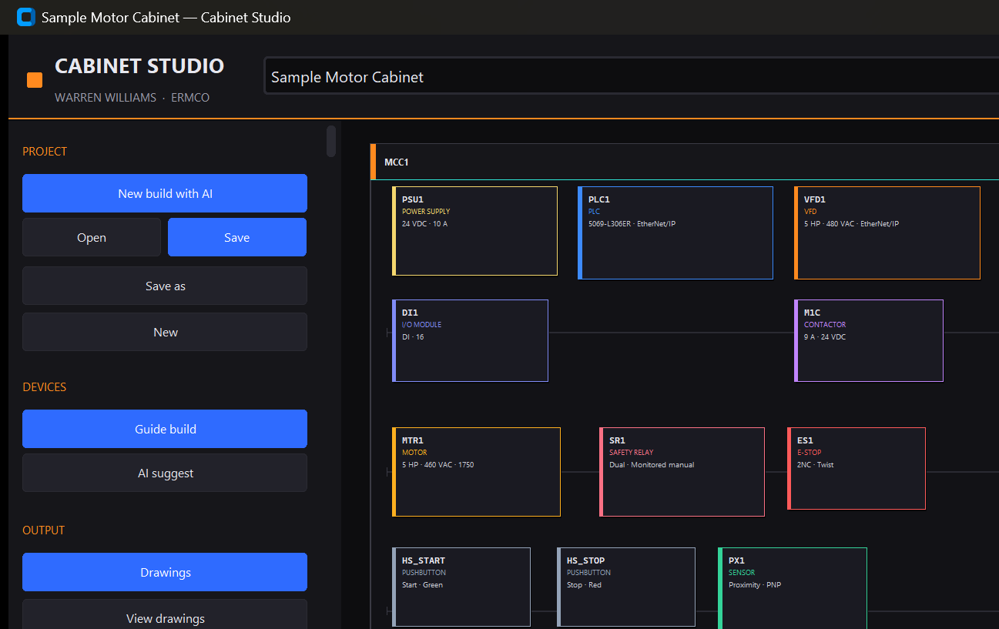
C. Left rail (order of operations)
New build with AI → Open/Save → Save as → New → Guide build / AI suggest → Drawings / View drawings → Programming / Program stubs → Desktop shortcut → UL 508A review.
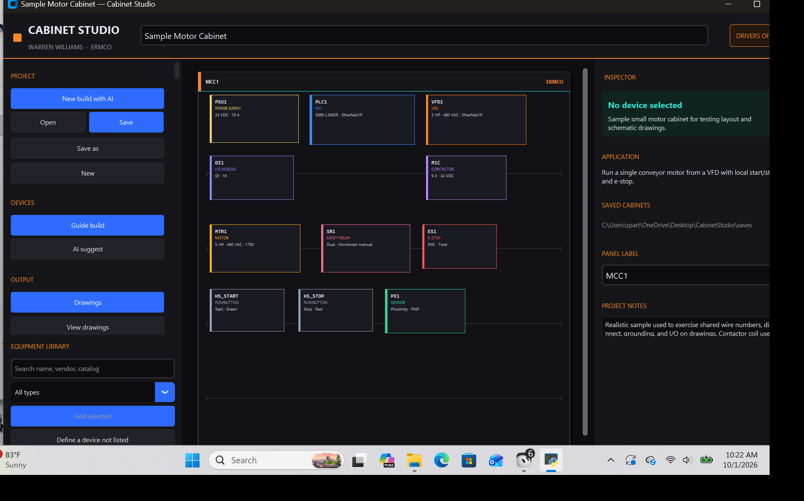
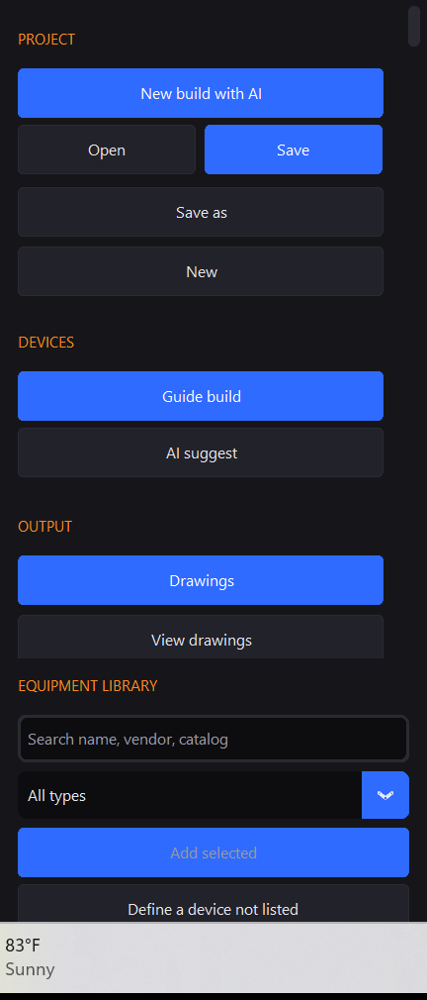
D. Drawings
- Click Drawings.
- Click View drawings and flip with Previous/Next.
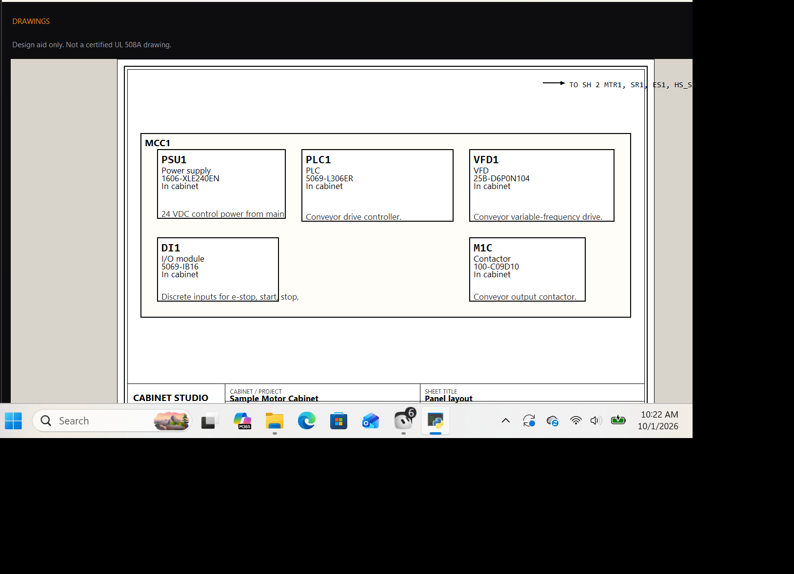
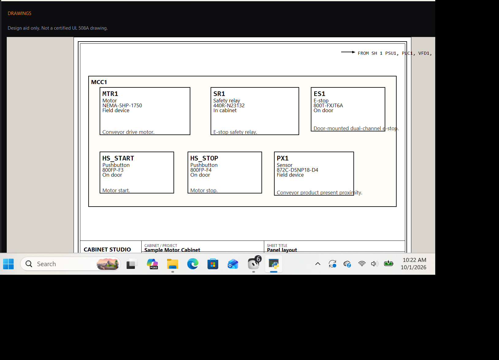
E. Edit schematics (via cabinet, not SVG)
- Select a tile → Inspector → Edit definition.
- On the Wiring step set terminal landings, wire numbers, wire color.
- Click Drawings again to regenerate.
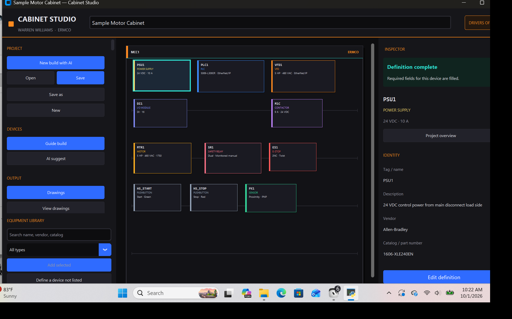
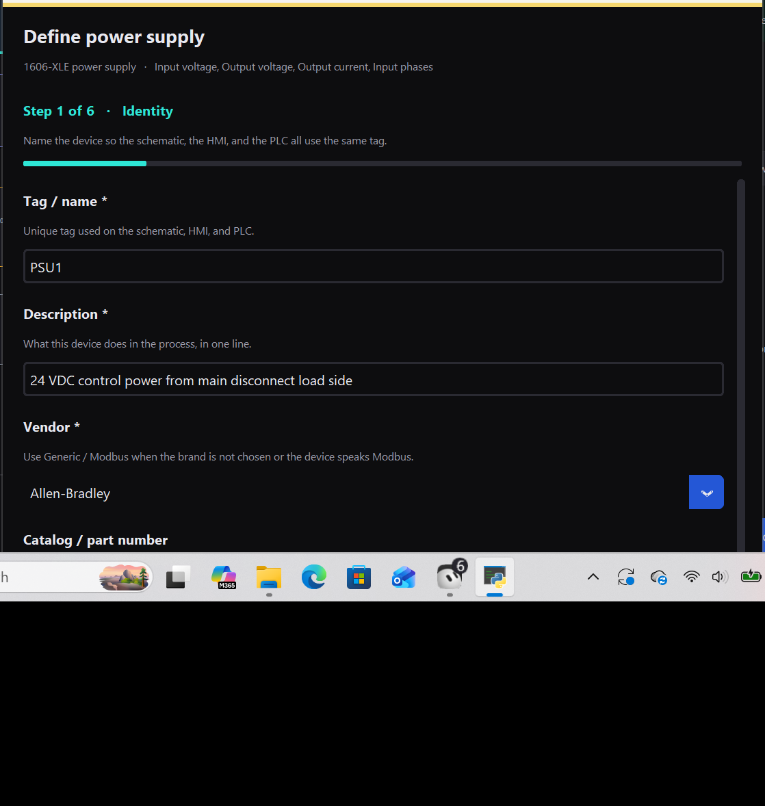
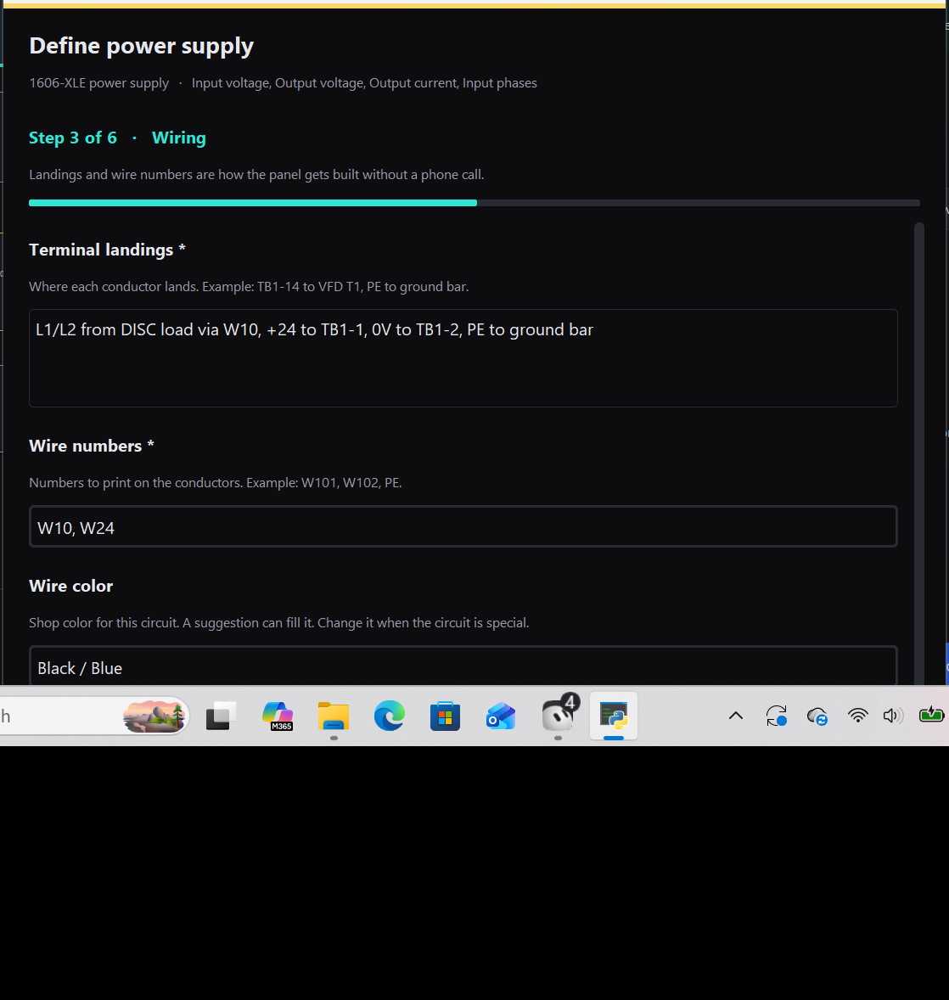
F. Programming
- Click Programming.
- Use Ask questions / Ladder / Copy PLC / Print / Rung editor.
- Click Done - return to cabinet.
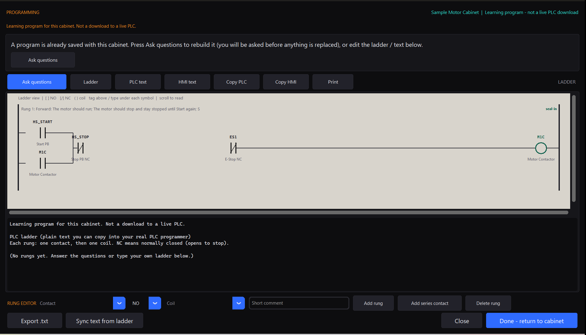
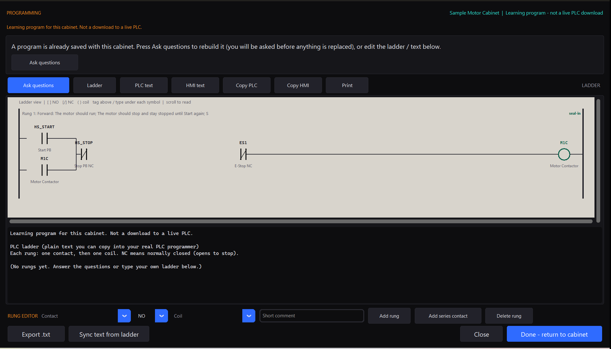

G. New build with AI
Top button walks interview → recommend → define → save → drawings → programming with confirms.